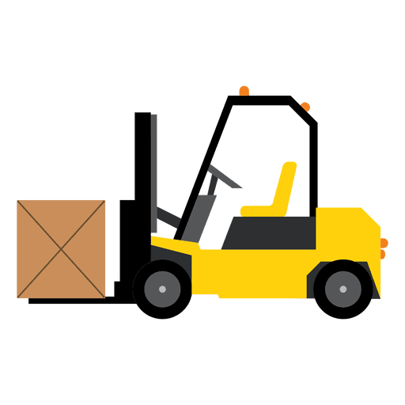
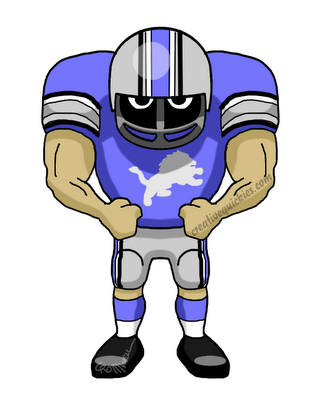
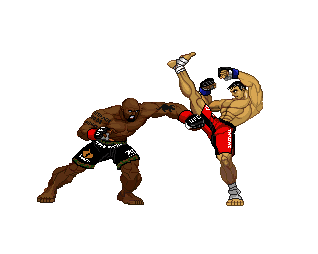

Education
My Education started at Somerset School which was a Kindergarten to Grade 4 school, I then went to Samuel W. Shaw for my grade 5-9 education. After completing ninth grade I went to Centennial High School for three years. Once I graduated and completed my highschool diploma I came to MRU and took a year of University Enterance Option, in my second year I transferred into my program (Bachelor of computer information systems) which I am currently still taking. Some of the courses I have taken are Comp 1501, Comp 1502, Web 2511, and Math 1505, the most challenging being Comp 1502.
Some of the projects I have worked on are developing websites using HTML and CSS, creating a toy inventory system, and creating a gambling game.
Work Experience
My very first job was Swiss Chalet when I was 15 years old, My responsibilities at work were preparing take-out, running food to tables, and cleaning dishes. After Swiss Chalet I went to the Calgary
Stampede for the summer where I cleaned the corral and the washrooms in that building. After this I worked at Lowes for the summer as a Loader where I would load heavy items into customers vehicles,
grab special orders from the back, and flag machinery. My next job was Sobeys, I worked in the produce department, My responsibilities were putting away large orders of produce, stocking the floor, and assisting customers.
After Sobeys I went to McDonalds for a year, at Mcdonalds I was a receiver, I would receive orders twice a week and put them away, I was also a cook and a cashier. Once Covid began I was laid off and decided to find a new job at The Home Depot
which I am currently working at. At the Home Depot I am a sales associate for the seasonal department, I am also a forklift, reach-truck, and order-picker operator. My responsibilities include Customer Service, ensuring products are in their homes,
bringing heavy products down from the overheads on the order-picker, Bringing pallets down from racks using the reach-truck or forklift, and selling products.

Skills
Some skills I have are my machine operator skills, being able to pull pallets from narrow isles, being able to steer around tight spaces without damaging products, and the ability to lift heavy objects while on a small platform. Former skills I had were
being able to play three positions in football, these positions being Offensive Line, Defensive Line, and Fullback.

Hobbies
Some hobbies I have are playing video games, typically at night once I am done working/studying. Another hobby I have is watching Mixed Martial Arts, particularily UFC but I also watch other
promotions such as Bellator, OneFC, or occasionally PFL.
